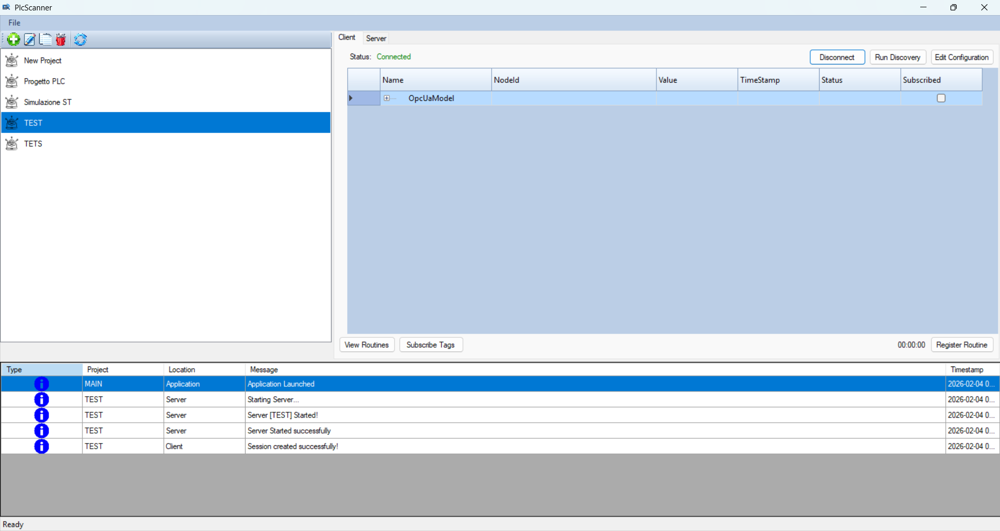
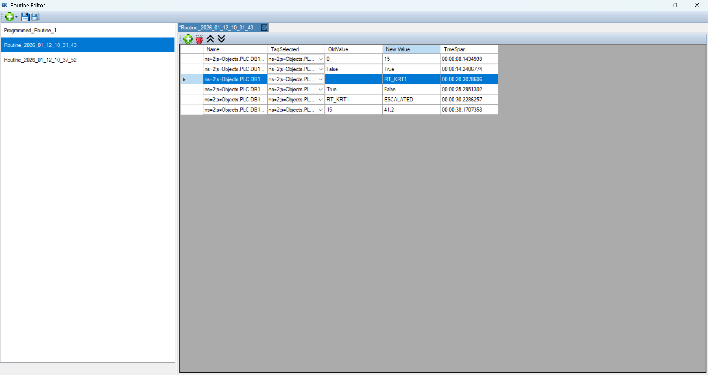
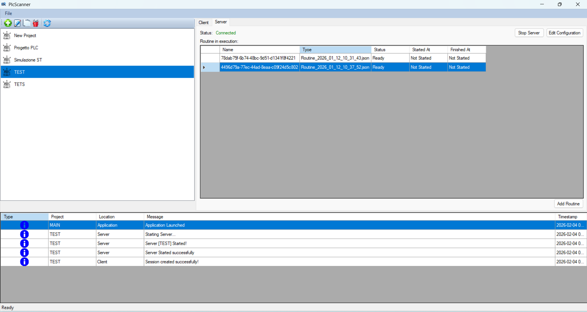

Navigazione completa del namespace con struttura ad albero.
Sottoscrizione variabili ed eventi con aggiornamenti live..
Supporto sicurezza, certificati e connessioni industriali.
Supporta l'esposizione del mapping generato tramite OPC Server.
Permette di registrare il funzionamento di un PLC o configurarne uno ad hoc permettendo simulazioni fedeli.
UI disegnata ad HOC per permettere anche ai neofiti un facile utilizzo.



.NET • C# • OPC UA Stack • SQL • Industrial Networking
Disponibile per Windows
Download EXE